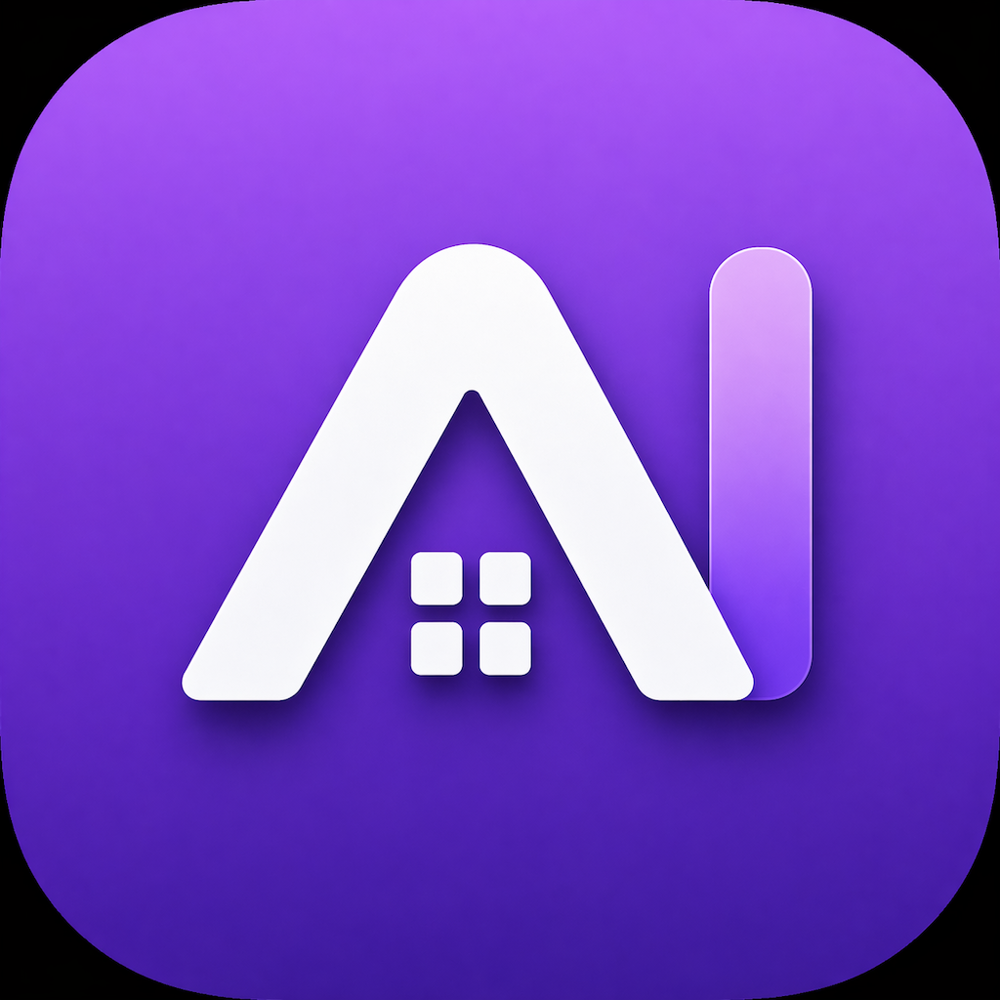
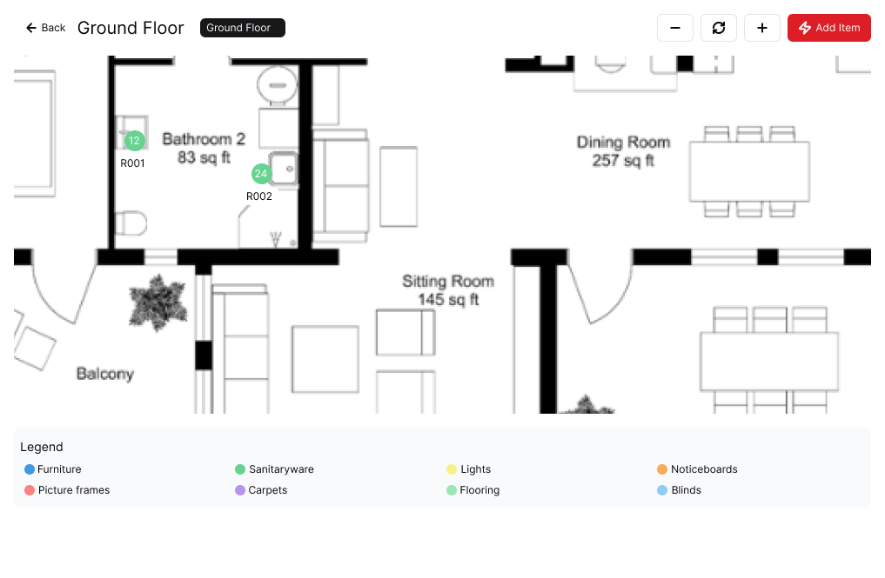
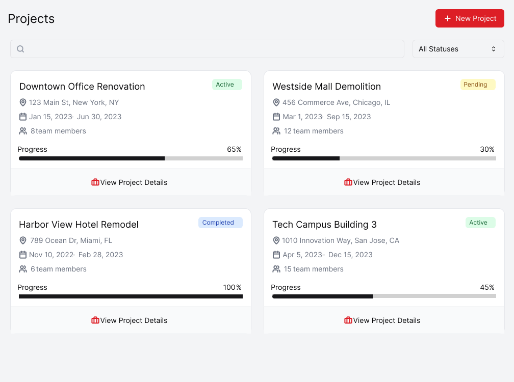
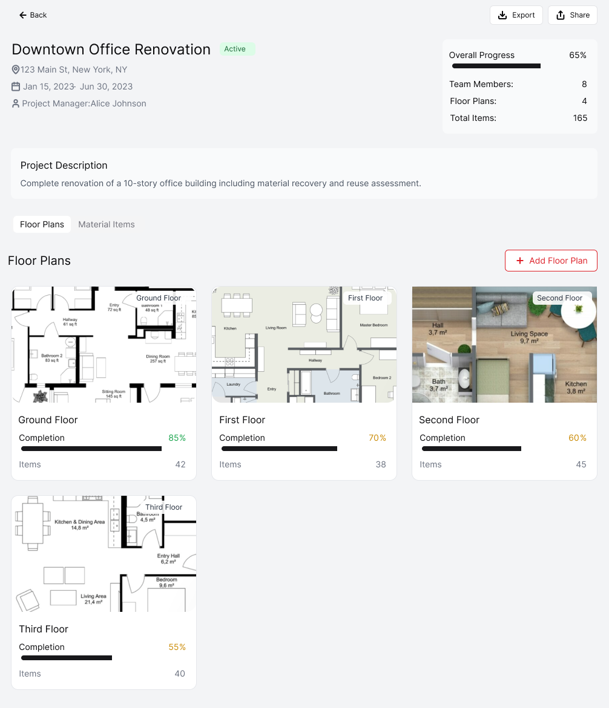
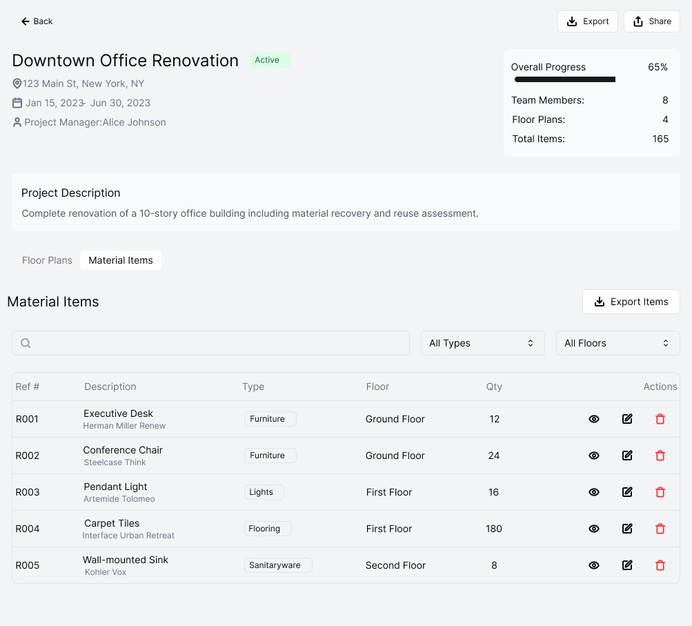
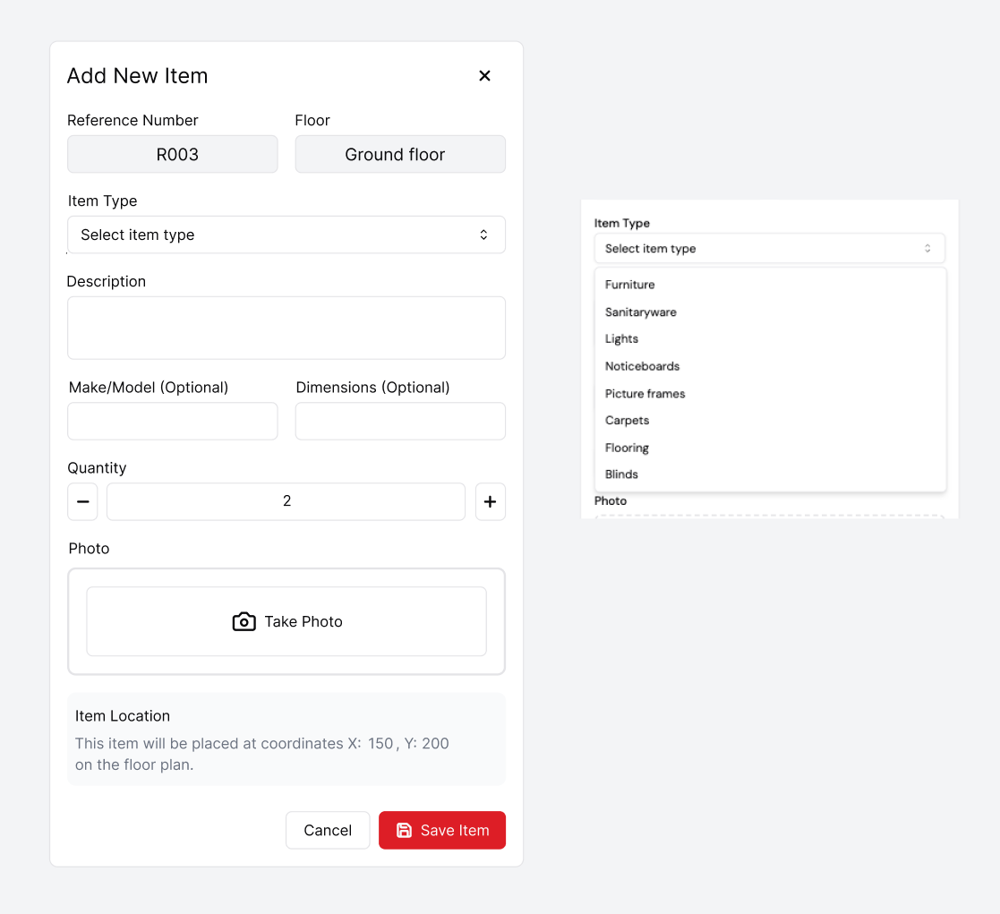

Manage projects
Create or review project records, status, dates, team details, and project-level organisation.

AI Inventory BetaPrivate client beta for iPad and iPhone
AI Inventory helps teams organise projects, mark materials and assets on plans, attach item photos, and prepare useful exports from site work.
This is a beta build. Please expect changes and send feedback on anything confusing, missing, or broken.

Focus on the core beta workflow: project setup, floor plans, item capture, photos, and exports.
Create or review project records, status, dates, team details, and project-level organisation.
Use plan views to organise floors and check whether item markers are clear in a real survey context.
Add materials and assets with references, descriptions, categories, tags, quantities, and notes.
Check the photo capture flow, photo ordering, and how clearly images support the item record.
Try exporting records and floor plan outputs so the reporting workflow can be checked early.
Use the app as if you were preparing a real project survey, then send notes on anything that slows you down.
Install Apple TestFlight if it is not already on your device.
Open the beta link and install AI Inventory.
Create or open a project and check whether the project fields match how you work.
Add a floor plan, then add material or asset items from the plan view.
Add item photos and notes, then review the material list and item detail screens.
Try exporting project information and report anything unclear, incomplete, or unreliable.
These screens show the main workflow areas to test in the beta.




Please report confusing steps, missing fields, photo issues, export problems, floor plan marker problems, crashes, or any workflow that does not match how a real site survey is done.